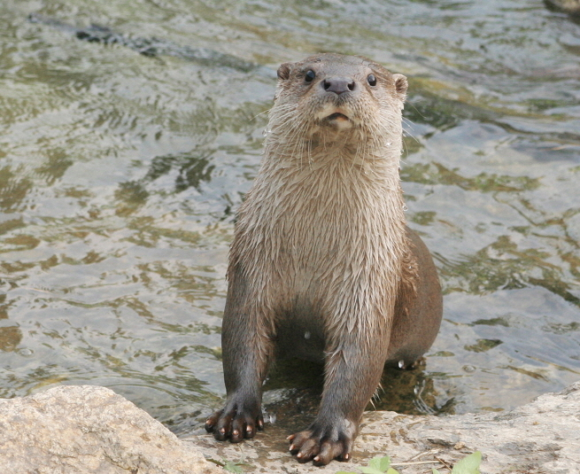

수달

주요특징 및 설명
- 종명: 수달(水撻/水獺, Eurasian-river Otter)
- 학명: Lutra lutra
- 생물학적 분류: 족제비과 수달속
- 분포: 한국, 동남아시아, 서유럽, 북아메리카
- 등급: 멸종위기종 Ⅰ급, 천연기념물 제330호
- 주요 특징
수달은 일반적으로 먹이가 풍부한 민물에 서식하며, 자기영역 방어를 강하게 하여 일생을 거의 혼자 산다.
발가락 사이에는 물갈퀴가 발달되어 있다. 또한, 물속에서
먹이를 찾을 수 있도록 수염이 나있다.